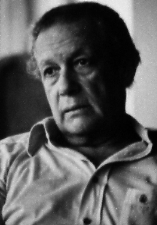

HOME FUNDEF
Juan Liscano
Juan Liscano
 Nació en Caracas el 7 de julio de 1915. Cursó estudios primarios y secundarios, en parte en Caracas, y en parte en Francia, Bélgica y Suiza. A su regreso a Caracas en 1934, ingresó en la Universidad Central de Venezuela, donde cursó los tres primeros años de Derecho, estudios que abandonó para dedicarse de lleno a su obra literaria.
Su labor de escritor abarca tres campos: periodismo, investigación del folklore y literatura de creación, de crítica y ensayística.
Se inició como periodista en Acción Estudiantil y la revista FFV, aparecidos a raíz de la muerte de Juan Vicente Gómez, órganos de la Federación de Estudiantes de Venezuela, a la que perteneció. En 1938 fundó la revista ``Cubagua'' (cinco entregas); luego fue director del boletín ``Presente'', órgano de estudio del grupo del mismo nombre (dos entregas); en 1944 junto con un grupo de escritores fundó ``Suma'' cuya publicación dirigió desde su primera entrega. Cuando el grupo se desintregó convirtió a Suma en una Editorial y Librería.
Finalmente estuvo encargado de la sección bibliográfica de las páginas literarias de ``Ahora'', hasta que en agosto de 1943, cuando apareció ``El Nacional'', entró a dirigir su sección literaria dominical, a la cual bautizó con el nombre de ``Papel Literario'', hasta junio de 1950, y después de 1959 a 1961.
Su labor como folklorista se inició en 1938, de manera espontánea, más como acercamiento humano hacia el pueblo que como disciplina etnológica. Es el autor de la primera recolección sistemática de nuestra música popular por medio del documento grabado en disco. Fue director del Servicio de Investigaciones Folklóricas Nacionales dependientes de la Dirección de Cultura del Ministerio de Educación, organismo creado por Decreto Número 430 del 30 de Octubre de 1946, desde su fundación hasta el mes de noviembre de 1948, cuando renunció. Cedió copia de su colección de músicas folklóricas venezolanas, en 1946 a la Biblioteca del Congreso de Washington, cuya sección ``Archivo de la Canción Americana'', donde reposan discos, le encomendó y publicó luego de una selección de esos discos en sus acreditadas colecciones de álbumes de música folklórica, bajo el nombre de Folk Music of Venezuela (Album XV).
Bajo su dirección, apareció la revista venezolana de folklore, órgano del Servicio de Investigaciones Folklóricas Nacionales y fue presentada la Fiesta de la Tradición, Cantos y Danzas de Venezuela, celebrada en el Nuevo Circo, con más de 500 participantes, durante las noches del 17 al 21 de febrero de 1948.
Estuvo exiliado en Europa, de 1953 a 1958, año en el que regresó a Venezuela donde se inició el actual proceso democrático al cual contribuyó como columnista en la prensa y activista independiente. También actuó en la Radio y en la TV entre 1960 y 1966.
En 1962 y 63 tomó parte respectivamente en el Encuentro de Escritores Alemanes y Latinoamericanos celebrado en Berlín y viajó por la República Federativa de Yugoslavia, invitado por el Gobierno y la Sociedad de Escritores de ese país, donde le tradujeron al servocroato una selección de poesía. En 1964 fundó y dirigió hasta 1984 la revista de literatura e ideas ``Zona Franca'' que alcanzó amplia divulgación internacional. Presidió las Comisiones Organizadora y Preparatoria del actual Consejo Nacional de la Cultura (CONAC), entre marzo de 1974 y octubre de 1975. Fue Vice-presidente y Director General de Monte Avila Editores C.A., una empresa con capital estatal, entre 1979 y 1984.
Obtuvo el Premio Municipal de Poesía en 1942, el Premio Nacional para poesía en 1950. Ha sido condecorado con la Orden Andrés Bello, la Orden Francisco de Miranda, Orden Caballero de la Cruz del Arte y Letras (Francia), Orden Bandera Roja Yugoslava con Banda, la Orden Diego de Lozada en su Primera Clase.